유통관리사-3급 (2020-08-08 기출문제)
1과목: 유통상식
1. 최근 주요 유통환경의 변화와 소매업 발전의 추세로 가장 옳지 않은 것은?
- 파워소매업자(power retailer)에 의한 소매시장 지배
- 소매업(태)의 양극화 심화
- 편의성에 대한 중요도 증가
- 오프라인 매장의 강세로 인한 대형마트 출점확대
- 유통과 물류에 있어서 정보 기술의 영향력 증가
(정답률: 79%)

2. 유통경로가 존재해야 하는 이유로 옳지 않은 것은?
- 유통업체 브랜드 개발의 활성화
- 거래의 효율성 증가
- 분류기능 수행
- 거래 반복화에 의한 비용절감
- 정보 탐색과정의 촉진
(정답률: 57%)
3. 생산 및 공급업자에 대한 소매업의 역할로 가장 옳은 것은?
- 쇼핑 장소를 제공하는 역할
- 올바른 상품을 제공하는 역할
- 쇼핑의 즐거움을 제공하는 역할
- 적절한 상품의 구색을 갖추는 역할
- 소비자의 상품 구매 정보를 전달해 주는 역할
(정답률: 50%)
4. 유통산업의 환경 변화 중 시장 환경 요인에 대한 내용으로 가장 옳은 것은?
- 교육 수준의 향상
- 고령 인구비율의 증가
- 소비자 보호 운동의 확산
- 소매점 경쟁 구조의 변화
- 소득 수준과 소비 구조의 변화
(정답률: 54%)
5. 아래 글상자에서 소매상을 위해 도매상이 수행하는 기능을 모두 고른 것으로 가장 옳은 것은?
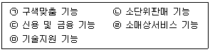
- ㉠
- ㉠, ㉡
- ㉠, ㉡, ㉢
- ㉠, ㉡, ㉢, ㉣
- ㉠, ㉡, ㉢, ㉣, ㉤
(정답률: 60%)
6. 협동조합에 대한 설명으로 가장 옳지 않은 것은?
- 조합원인 이용자가 소유하고 통제하는 기업이다.
- 조합원의 공동의 편익을 충족하는 것이 목적이다.
- 주식회사와 같이 1주 1표의 투표를 통해 의사를 결정한다.
- 협동조합은 조합원이 사업을 이용한 실적에 비례하여 잉여금을 배당한다.
- 협동조합은 회원의 회비로 움직이는 일종의 비영리 단체이다.
(정답률: 53%)
7. 아래 글상자의 내용과 같이 기업윤리를 정의할 때 기업윤리의 필요성으로 가장 옳지 않은 것은?
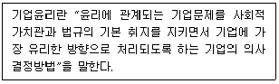
- 기업윤리는 기업 경쟁력 강화를 위해 필요하다.
- 기업 활동의 결과는 사회에 막대한 영향을 끼친다.
- 비윤리적 행위는 장기적으로 볼 때 기업에 손해가 된다.
- 기업의 목적은 이익창출이므로 과정보다는 결과가 중요하다.
- 기업윤리문제를 간과하면 기업 활동에 좋지 않은 영향을 미친다.
(정답률: 82%)
8. 성희롱 예방을 위한 동료로서의 태도로 옳지 않은 것은?
- 상대방의 침묵을 동의로 받아들이지 않는다.
- 성희롱에 대한 예비지식과 대처방법을 알아두어야 한다.
- 성희롱은 피해자에게도 책임이 있음을 간과하지 않는다.
- 상대방의 거부의사(언어, 행동 등)를 왜곡해서 받아들이지 않는다.
- 성에 대한 가치관, 행동의 한계에 대한 분명한 기준을 갖도록 한다.
(정답률: 85%)
9. 판매의 개념과 판매원의 역할에 대한 설명으로 옳지 않은 것은?
- 판매의 개념은 이익을 얻기 위해 고객욕구를 충족시키는데 역점을 두는 반면, 마케팅 개념은 기존제품과 대량의 판매활동에 역점을 둔다.
- 판매원은 고객과 접촉하고, 제품에 대해 설명하고, 고객의 질문에 답해주고, 가격과 조건을 협상하고, 계약을 종결시키는 일련의 과정을 통해 제품판매를 종결시킨다.
- 판매원은 상품, 서비스, 인테리어, 디스플레이, 편의시설 등에 관한 고객의 반응에 세심한 주의를 기울여 관련부서의 활동에 반영시킨다.
- 판매원은 고객에게 서비스를 제공하고 일상적인 마케팅 정보수집 업무를 수행한다.
- 판매원은 거래고객의 대변인 역할을 수행하는데, 매장 내 고객의 관심사를 대변하고 구매자-판매자 관계를 관리한다.
(정답률: 49%)
10. 고객의 요구를 거절할 때의 기본자세에 대한 설명으로 가장 옳지 않은 것은?
- 고객의 입장에서 이해할 수 있게 양해를 구한다.
- 응해줄 수 없는 이유를 알기 쉽게 설명한다.
- 무턱대고 “안된다”, “못한다”고 말하지 않는다.
- 고객이 무례하다고 생각하지 않도록 정중하게 거절한다.
- 애매한 태도를 취한다.
(정답률: 87%)
11. 판매원의 바람직한 판매화술 및 마음가짐으로 옳지 않은 것은?
- 말은 인격의 총화라는 입장에서 열의를 가지고 해야한다.
- 적극적인 경청태도로 고객의 이야기에 귀를 기울여야한다.
- 고객제일주의 지향의 원칙에서 고객이 자신의 마음을 빨리 결정하도록 자극한다.
- 만족감을 판매한다는 입장에서 고객에게 구매 상품에 대한 만족감과 판매원의 대응에 대한 만족감을 증대시킨다.
- 팔지 말고 사게 하자는 입장에서 판매원이 고객의 호의와 행위를 이끌어 내는 판매상담사가 되어야 한다.
(정답률: 82%)
12. 매장 근무계획 설정 시 고려해야 할 사항으로 가장 옳지 않은 것은?
- 근무계획 설정과 시행 확인이 필요하다.
- 모든 직원이 원하는 시간대에 근무할 수 있게 근무시간선택에 자율성을 부여한다.
- 직원들간 형평성 있는 근무계획이 되어야 한다.
- 매출피크시간과 행사기간의 인원부족을 고려하여 수립하여야 한다.
- 해결이 어려운 일일수록 점포책임자의 솔선수범이 필요하다.
(정답률: 80%)
13. 고객응대 시 판매원의 자세로 가장 옳지 않은 것은?
- 고객은 스스로 찾아온 우리 매장의 손님으로 정중하게 응대한다.
- 고객이 매장에 들어온 순서대로 응대하는 것이 좋다.
- 고객의 복장이나 외모, 말씨 등으로 판단하여 차별 대우해서는 안 된다.
- 직원의 가족이나 지인이 왔을 때는 내부직원이 만족할 수 있게 더 특별하게 대한다.
- 한꺼번에 다수의 고객을 응대하지 말고 한 사람씩 응대한다.
(정답률: 86%)
14. 물류조직의 전문성에 따른 물류관리의 구분에서 아래 글상자의 내용을 모두 충족하는 용어로 가장 옳은 것은?
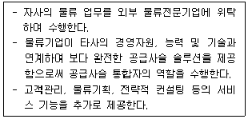
- 제1자 물류
- 제2자 물류
- 제3자 물류
- 제4자 물류
- 제5자 물류
(정답률: 40%)
15. 아래 글상자의 내용이 설명하는 물류의 기능으로 가장 옳은 것은?
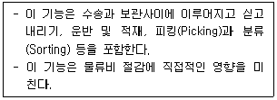
- 하역기능
- 정보유통기능
- 유통가공기능
- 보관기능
- 포장기능
(정답률: 75%)
16. 유통산업발전법(법률 제14997호, 2017.10.31., 일부개정)에서 유통산업시책의 기본방향에 해당하지 않는 것은?
- 유통구조의 선진화 및 유통기능의 효율화 촉진
- 유통산업의 지역별 균형발전의 도모
- 유통산업의 종류별 균형발전의 도모
- 유통산업에서의 기업 편익의 증진
- 유통산업의 국가경쟁력 제고
(정답률: 60%)
17. 프랜차이즈 시스템의 장점에 대한 설명으로 옳지 않은 것은?
- 가맹본부는 가입비와 로열티 등을 확보할 수 있기때문에 안정된 사업을 수행할 수 있다.
- 가맹본부는 사업확장을 위한 자본조달이 용이하다.
- 가맹본부가 가맹점에 대한 지속적인 지도 및 투자를 할 필요가 없다.
- 가맹점은 비교적 소액의 자본으로 사업 시작이 가능하다.
- 가맹점은 가맹본부의 인지도를 활용하여 사업 초기소비자의 신뢰를 얻기가 용이하다.
(정답률: 80%)
18. 다음에서 설명하는 ㉠, ㉡, ㉢에 들어갈 용어로 알맞게 짝지어진 것은?
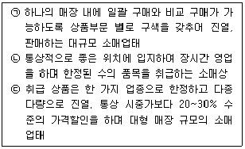
- ㉠대형마트, ㉡편의점, ㉢아웃렛점
- ㉠백화점, ㉡카테고리킬러, ㉢대형마트
- ㉠백화점, ㉡편의점, ㉢카테고리킬러
- ㉠하이퍼마켓, ㉡편의점, ㉢카테고리킬러
- ㉠하이퍼마켓, ㉡카테고리킬러, ㉢대형마트
(정답률: 46%)
19. 아래 글상자의 내용 중 개방적 유통경로의 특징으로 옳은 것은?
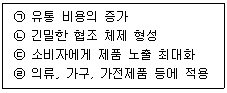
- ㉠, ㉡
- ㉠, ㉢
- ㉡, ㉢
- ㉡, ㉣
- ㉢, ㉣
(정답률: 46%)
20. 유통경로의 기능으로 가장 옳지 않은 것은?
- 교환과정의 촉진
- 소비자와 제조업자의 연결
- 경로통제의 효율성 제고
- 고객서비스 제공
- 제품구색 불일치의 완화
(정답률: 35%)
2과목: 판매 및 고객관리
21. 고객불만에 대한 대응으로 가장 옳지 않은 것은?
- 우선 사과하고 고객의 불만을 경청하면서 고객의 불만에 공감한다.
- 침착한 분위기를 만들어 고객의 마음을 누그러뜨려 진정하도록 돕는다.
- 주변의 다른 고객들이 눈치 채지 못하게 즉각적인 반응 및 응대를 자제한다.
- 상사에게 고객의 불만 내용을 객관적으로 전달해 문제해결을 돕도록 한다.
- 문제 해결책을 검토하여 먼저 고객에게 대안을 제시할 수 있도록 한다.
(정답률: 71%)
22. 지속적인 재고통제가 가능한 최소의 단위를 일컫는 용어로서, 예를 들어 의류의 경우, 색상, 사이즈, 스타일 등이 고려된 수준을 의미하는 단어는?
- Category
- SKU
- Merchandise
- Classification
- GMROI
(정답률: 53%)
23. 진열에 대한 내용으로 옳지 않은 것은?
- 라이트업(right up) 진열: 좌측에 고가격, 고이익, 대용량상품을 진열하고 우측에는 판매가 잘 안 되는 상품을 진열
- 수직 진열: 매대 내에서 동일품종상품을 세로로 진열
- 샌드위치 진열: 진열대 내에서 잘 팔리는 상품 옆에 이익은 높으나 잘 팔리지 않는 상품을 진열해서 고객 눈에 잘 띄게 하는 진열
- 전진입체 진열: 적은 양의 상품을 갖고도 풍부한 진열을 연출하기 위해 앞으로 내어 쌓는 진열
- 컬러컨트롤 진열: 상품의 색채 특성을 파악하여 진열
(정답률: 66%)
24. 각종 고객응대 상황에서의 응대화법 중 가장 옳지 않은 것은?
- 맞이할 때 - 무엇을 도와드릴까요?
- 기다리게 할 때 - 5분 정도 더 걸리는데 시간 괜찮으시죠?
- 서류 등의 작성 요구 시 - 죄송합니다만, 여기에 작성해주시겠습니까?
- 고객을 안내할 때 - 오래 기다리셨습니다. 이쪽으로 오시겠습니까?
- 고객을 배웅할 때 - 감사합니다. 안녕히 가십시오. 또 뵙겠습니다.
(정답률: 70%)
25. 상품 진열에 대한 내용으로 옳지 않은 것은?
- 고객들이 상품을 보기 쉽고 사기 쉽게 상품 진열이 이루어져야 한다.
- 주력상품은 고객의 눈에 잘 띄는 곳에 진열한다.
- 관련 상품들을 상하좌우로 함께 진열하여 고객들이 편리하게 쇼핑하도록 한다.
- 회전율이 낮은 상품, 고가품은 최대한 많은 양을 진열한다.
- 상품의 브랜드와 가격이 잘 보이도록 진열한다.
(정답률: 83%)
26. 상품관리에 관한 내용으로 옳지 않은 것은?
- 상품관리란 상품의 매입부터 판매까지의 실태를 분석하고 과정을 관리하는 것이다.
- 상품관리는 어떤 상품이 잘 팔리고 있는가를 파악하고 분석하여 상품의 판매, 재고량을 효율적으로 관리하기 위함이다.
- 상품관리는 상품의 품절을 방지하고 불량재고를 줄이고자 한다.
- 상품관리는 상품의 회전율을 높이고자 한다.
- 상품회전이 빠른 상품은 소량으로 준비하고, 매출이 저조한 상품은 적정재고수준을 초과시키도록 한다.
(정답률: 83%)
27. 판매사원들의 상품지식 수준을 높이기 위한 방법으로 옳지 않은 것은?
- 제조사 측에서 제작한 상품설명서를 충분히 숙지한다.
- 상품과 관련된 전문서적을 읽거나 제조사 측의 전문가를 통해 자세한 설명을 듣고 자신의 지식으로 체계화시킨다.
- 제조사 측의 생산 공장이나 현장을 견학하거나, 전시회 등을 통해서 제조공정을 이해하고 상품에 관한 지식과 정보를 습득한다.
- 판매하고자 하는 상품을 판매사원이 직접 사용해 보며 상품지식을 습득하려는 노력을 한다.
- 고객들은 수많은 정보를 파악한 뒤 구매를 하러 왔으므로 인터넷에 있는 내용을 외워 고객질문에 자동판매기처럼 단순하게 답변한다.
(정답률: 81%)
28. 매장 레이아웃 설계 시 고려해야 할 주요 요소로 가장 옳지 않은 것은?
- 각 매장별 상품 구성(주력상품, 조력상품, 부속상품, 자극상품)
- 각 매장별 동선(주동선, 부동선)
- 각 매장별 업태 확인(대면판매, 측면판매, 셀프 서비스판매)
- 각 매장별 자석상품(상품의 힘으로 고객을 끌어들일 수 있는 매력 있는 상품배치)
- 각 매장별 품종구성
(정답률: 44%)
29. 점포 환경 관리에 대한 설명으로 가장 옳은 것은?
- 점포 환경은 판매원 중심으로 이루어져야 한다.
- 실내 인테리어는 예상 투자비를 초과하더라도 진행해야 매출 증대에 도움이 된다.
- 매장 내 청소는 업종에 따라 다르게 하고 소비자의 눈에 띄지 않는 곳은 생략한다.
- 점포의 바깥조명은 영업시간 내에만 점포의 존재를 기억시키는 역할을 하도록 한다.
- 점포 안의 조명은 상품을 돋보이게 하는 색채 배합을 하여 고객의 구매심리를 적극적으로 유발시킨다.
(정답률: 72%)
30. 아래 글상자는 점포의 공간관리에 대한 내용의 일부이다. ㉠과 ㉡에 들어갈 용어를 올바르게 나열한 것은?
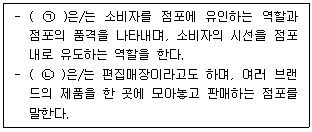
- ㉠ 버블(Bubble), ㉡ 멀티숍(Multi Shop)
- ㉠ 블록(Block), ㉡ 쇼윈도(Show Window)
- ㉠ 점두(Storefront), ㉡ 버블(Bubble)
- ㉠ 쇼윈도(Show Window), ㉡ 블록(Block)
- ㉠ 쇼윈도(Show Window), ㉡ 멀티숍(Multi Shop)
(정답률: 78%)
31. 고객에게 상품에 대해서 설명할 때의 응대 방법으로 가장 옳은 것은?
- 어려운 용어나 전문용어를 사용하여 해당상품의 전문가처럼 보이도록 하여 고객신뢰를 받도록 한다.
- 상품소재, 재질, 디자인, 색상, 사용방법, 손질법 등에 대해 연구하여 정보제공자의 역할을 수행한다.
- 거짓된 상품정보를 주거나 오해를 가져올만한 설명을 한다.
- 상품설명에 오랜 시간이 걸릴 때 싫은 표현이나 행동을 하여 고객이 눈치 채도록 한다.
- 값이 비싼 상품위주로 보여주고 장점에 대해서만 설명한다.
(정답률: 81%)
32. 점포의 레이아웃에 대한 설명 중 옳은 것을 고른 것은?
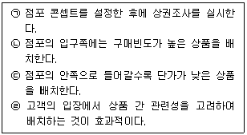
- ㉠, ㉡
- ㉠, ㉢
- ㉡, ㉢
- ㉡, ㉣
- ㉢, ㉣
(정답률: 70%)
33. 상품 포장 기능 중 의사전달 기능에 대한 내용으로 가장 옳은 것을 고른 것은?
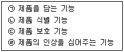
- ㉠, ㉡
- ㉠, ㉢
- ㉡, ㉢
- ㉡, ㉣
- ㉢, ㉣
(정답률: 56%)
34. 고객에게 상품을 제시하는 것에 대한 내용으로 옳지 않은 것은?
- 상품을 제시하거나 고객이 요구하는 상품을 꺼낼 때는 소중히 취급하여 고객에게 정중히 제시한다.
- 상품을 권하거나 보여줄 때는 손으로 직접 만져보거나 작동시켜 볼 수 있도록 고객의 정면에서 보기 쉽게 권한다.
- 고객이 구매결정에 혼선을 빚지 않도록 너무 많은 수량의 상품을 보여주지는 않도록 한다.
- 상품 가격에 따라 고객에게 다른 행동을 보인다.
- 고객에게 적절한 질문을 해가면서 부담을 주지 않는 범위 내에서 상품을 제시하고 고객이 직접 선택할 수 있도록 도와준다.
(정답률: 81%)
35. 유통매장 판매직원이 고객에게 호감을 주기 위한 방법으로 옳지 않은 것은?
- 매장을 찾아온 고객에게 성실한 자세로 관심을 보여준다.
- 자기 매장을 찾아온 고객에게는 상품구입여부에 상관없이 친절히 대해준다.
- 고객의 말이 비록 불평과 불만이라고 할지라도 겸허한 자세로 경청한다.
- 자신이 판매하고자 하는 상품의 장점만을 일방적으로 설명을 한 후에 고객의 구매욕구나 취향을 듣는다.
- 고객의 주요관심사가 무엇인지 대화를 통해 파악하여 알아내고 고객의 관심사와 벗어나지 않도록 대화한다.
(정답률: 80%)
36. POS시스템 도입 시 장점에 대한 설명으로 옳지 않은 것은?
- 재고의 적정화와 물류관리의 합리화를 가져올 수 있다.
- 매상등록시간이 단축되어 고객대기시간이 줄며 계산대의 수를 줄일 수 있다.
- 단품관리에 의해 잘 팔리는 상품과 잘 팔리지 않는 상품을 즉각 찾아낼 수 있다.
- POS터미널의 도입에 의해 판매원 교육 및 훈련시간이 짧아지고 입력오류를 방지할 수 있다.
- 전자주문시스템과 연계는 될 수 없기 때문에 신속하고 적절한 구매는 할 수 없다.
(정답률: 79%)
37. 아래의 내용은 SERVQUAL 중 어떤 차원을 측정하는 것인가?
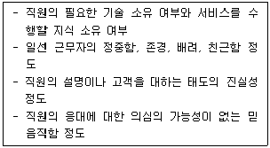
- 신뢰성(reliability)
- 대응성(responsiveness)
- 보증성(assurances)
- 공감성(empathy)
- 유형성(tangibles)
(정답률: 25%)
38. 판매촉진(sales promotion)에 대한 설명으로 옳지 않은 것은?
- 판매촉진은 제품이나 서비스의 구매 또는 판매를 장려하기 위해 제공되는 단기 인센티브이다.
- 샘플(sample)은 제품을 시험적으로 사용할 수 있는 정도의 양을 제공하는 것이다.
- 광고가 제품이나 서비스를 사야 할 이유를 제시한다면, 판매촉진은 지금 사야 할 이유를 제안한다.
- 쿠폰(coupon)은 명시된 제품을 구매할 때 구매자들에게 할인을 제공해 준다는 증빙서이다.
- 판매촉진의 가장 큰 장점은 호의적인 기업이미지 구축과 우호적인 관계 형성이다.
(정답률: 55%)
39. 다음 글상자에서 설명하는 새로운 방식의 점포관리시스템으로 옳은 것은?
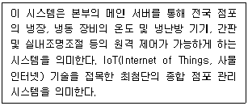
- SEMS(Smart store Energy Management System)
- WMS(Warehouse Management System)
- MRP(Material Requirement Program)
- SSM(Super SuperMarket)
- ICS(Inventory Control System)
(정답률: 58%)
40. 판매촉진 유형 중 가격형 판매 촉진에 대한 종류로 옳은 것을 모두 고른 것은?
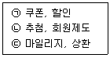
- ㉠
- ㉠, ㉡
- ㉡, ㉢
- ㉠, ㉢
- ㉠, ㉡, ㉢
(정답률: 56%)
41. 점포 관리의 의의 및 특징에 관한 설명 중 가장 옳지 않은 것은?
- 점포관리는 마케팅, 건축, 심리 등을 고려한 종합적접근이 필요하다.
- 각 점포가 처한 개별성보다는 일반화된 관리를 따른다.
- 하드웨어적인 측면과 소프트웨어적인 측면의 양면성이 존재한다.
- 점포 관리를 함으로서 소비자에게는 쾌적한 소비공간을 소매상에게는 깨끗한 판촉 공간을 제공할 수 있다.
- 점포 관리는 점포의 기능인 선전소구기능, 판촉기능, 쾌적한 환경 기능, 관리 기능을 효율적으로 달성하게 해준다.
(정답률: 71%)
42. POP(Point of Purchase) 광고의 경우 판매 측면에서 얻을 수 있는 효용과 고객 관점에서 얻을 수 있는 효용이 있다. 고객 입장에서 느낄 수 있는 효용을 바르게 설명한 것은?
- 판매원의 접객 활동을 도와준다.
- 판매원에게 신경 쓰지 않고 자유롭게 상품을 선택하도록 도움을 준다.
- 고객의 충동구매를 유발해서 판매증가를 가져 온다.
- 많은 상품 가운데 주력 상품을 강조해서 판매를 증대시킨다.
- 다른 판촉 수단과 연결해 판매 증대를 가져온다.
(정답률: 44%)
43. 구매 관여도 수준의 높고 낮음 및 구매대안들 사이의 중요한 차이의 많고 적음에 따라 소비자의 구매행동방식은 달라진다. 아래 그림의 ㉠에 해당하는 구매행동방식으로 가장 옳은 것은?
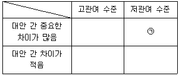
- 복합형 구매행동
- 습관형 구매행동
- 준거집단형 구매행동
- 다양성 추구형 구매행동
- 인지부조화 감소형 구매행동
(정답률: 31%)
44. 다음 중 광고와 인적판매에 관한 설명으로 옳은 것을 모두 고른 것은?
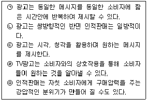
- ㉡, ㉢, ㉤
- ㉠, ㉢, ㉤
- ㉠, ㉡, ㉢, ㉤
- ㉠, ㉢, ㉣, ㉤
- ㉡, ㉢, ㉣, ㉤
(정답률: 54%)
45. 고객에 대한 마케팅 사고는 과거에서 현재까지 지속적으로 변화하고 있다. 아래 글상자의 설명으로 가장 옳은 것은?
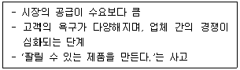
- 생산 지향적 사고
- 서비스 지향적 사고
- 판매 지향적 사고
- 매매 지향적 사고
- 고객 지향적 사고
(정답률: 44%)